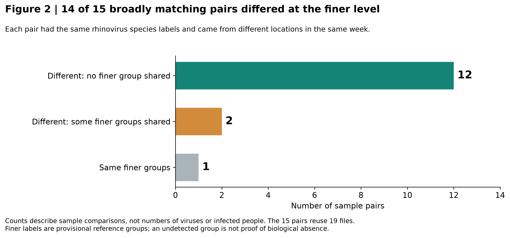

Rhinovirus A
A49 reference group
942 distinct matching sequences
Side project · Genomic surveillance · October 2026
What repeated rhinovirus detections can hide.
I analyzed public pooled-swab sequence data from Boston to ask a simple question: when the same virus label appears in two samples, how similar are the genetic signals underneath?
Of 15 sample pairs with matching species labels, 14 had different sets of finer genetic groups.
Same-week comparisons across different locations, using 19 files. Some files appear in more than one pair.
One concrete example
Two files collected at Downtown Crossing on August 14, 2026, each listed as a 50-swab pool, both contained Rhinovirus A. A closer look supported different genetic reference groups:
A49 reference group
942 distinct matching sequences
A1 reference group
795 distinct matching sequences
The broad label was the same, but it hid different genetic signals—even at the same place on the same day.
Counts describe distinct sequence strings, not infected people or independent viral particles. The group labels are provisional, and these files have not been verified as independent biological pools.
The geographic picture
Using broad virus labels, 15 pairs of locations had a detected label in common. Looking more closely at their sequences, only 4 pairs shared a finer genetic group.

Looking beneath the labels
Of the 15 sample pairs with exactly matching species lists, 12 had no finer groups in common, two shared some groups but differed in others, and one had the same finer groups.

Why keep this detail?
A Kenyan study found that rhinovirus type C22 appeared and disappeared at similar times across several locations, while C38 was detected only in northern study locations. Calling both “Rhinovirus C” would hide that distinction. Luka et al., 2023
That evidence motivated this project. Our Boston comparisons show how much genetic detail a species-only summary can leave out. They do not yet show that our provisional reference groups identify separate transmission chains or differences in illness severity.
Repeated samples are still valuable. They can reinforce evidence that a virus is circulating. Keeping genetic detail alongside detection counts helps describe what is being detected repeatedly. This study did not identify a reliably better sampling location or justify reducing collection.
How I checked
I used 50,865 sampled reads from 48 Boston pooled-swab files collected during June–September 2026. These are respiratory viral reads released by SecureBio, rather than complete raw sequencing data.
I matched reads to published VP1 sequences, a region used in rhinovirus classification, and required stringent sequence matching and at least five distinct matching strings to support a reference group. I then compared the resulting species lists and finer group lists between files.
Checks included stricter and looser matching rules, alternative references, and repeated comparisons with equal numbers of reads. Locations were not sampled on identical dates, and collection effort varied. These are descriptive results from a selected dataset, not a community prevalence estimate.
AI-assisted research: Codex supported literature review, coding, analysis, figures, checks and drafting. The linked report contains the methods, limitations and research-process record.